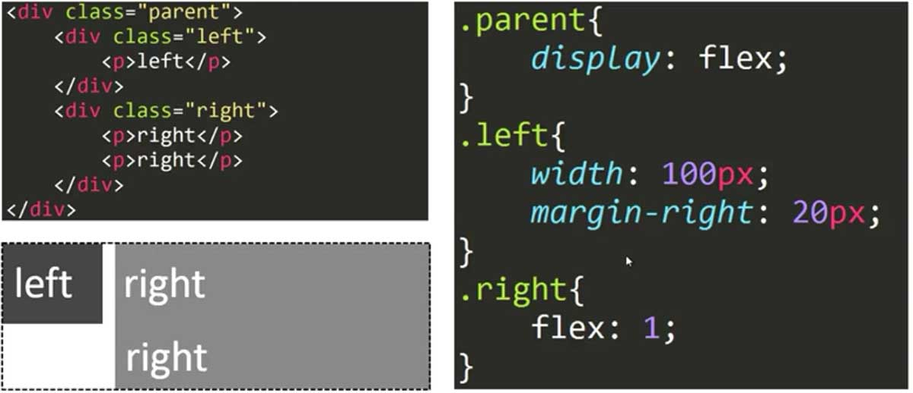

CSS 常用布局解决方案
本文记录下 CSS 常用的布局解决方案，对于需要高兼容性的布局可以使用基于 posistion 属性的布局，table 布局方式也经常用到。还有基于margin 和 float 的传统布局方式、利用 BFC 的布局方式和 CSS3 的弹性布局 flex 的布局方式。具体选用哪一种可以依据实际业务加以变通和修改。
1. 水平居中布局：
“inline-block + text-align”
- 优点：兼容性好；
- 缺点：子容器的内容居中需要额外的
text-align属性；

“table + margin”
- 优点：兼容性好，只用关心子元素的样式属性；
display:table 属性使得元素具有同 inline-block 一样的特性，容器大小取决于内容大小，并且具有宽高。
“absoulte + transform (relative + relative)”
- 缺点：兼容性问题；
“relative + relative”：父元素设置 relative 向右平移 50%， 子元素设置 relative 向左平移 -50%。relative 均是相对于自身宽度进行移动。

“flex + justify-content”
- 优点：只需要对父容器进行设置；
- 缺点：兼容性问题；

2. 垂直居中布局：
“table-cell + vertical-align”
- 优点：兼容性好；
vertical-align 可以作用于 inline、inline-block、table-cell 元素上。

“absolute + transform”
- 缺点：兼容性问题；
“flex + align-items”
- 缺点：兼容性问题；

3. 一列定宽，一列自适应：
“float + margin”
- 优点：兼容性较好；

“float + margin + (fix) 解决 IE6 下的3像素问题”
- 优点：兼容性较好；
防止子元素清除浮动带来的问题，使用 position:relative; 来提高元素层级。

“float + overflow”
- 缺点：兼容性问题；
利用 BFC 模式使自适应部分不受 float 的影响。
“table”
缺点：代码量较多；
display: table; 默认大小为内容大小；display: table-cell 不能设置 margin 属性；table-layout: fixed; 可以加速渲染，布局优先，固定表格布局中，水平布局仅取决于表格宽度、列宽度、表格边框宽度、单元格间距，而与单元格的内容无关。自动表格布局中，列的宽度是由列单元格中没有折行的最宽的内容设定的。

“flex”
- 缺点：性能一般；
flex 一般用于小范围布局，防止出现性能问题。

4. 多列等分布局：
“float”
- 优点：耦合性较大；
使用 box-sizing: border-box; 让浏览器以 IE 的怪异模式解析“盒模型”，即元素尺寸为 “content”、“padding” 与 “border” 三者之和。
“table”
- 优点：结构跟样式解耦；

“flex”
- 缺点：兼容性问题；